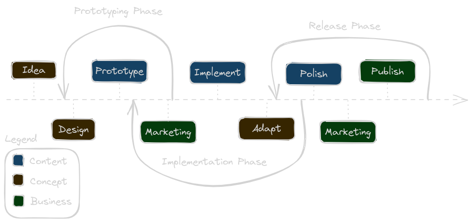
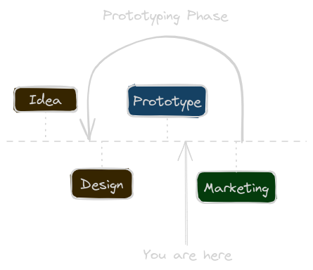

Today, let's take a peek at game development in general. Similar to what I already did a while ago. A few months ago I picked it up again and to flesh out the design more and do some prototyping. It was nice and all, but I made the classical mistake of having a scope that would take years to implement.
Depending on what you want to achieve, that could be okay - or not. In my case, I want to learn the whole process:
- Game Design
- Game Development
- Game Marketing
- Game Self Publishing
I've been reading books and listening to audiobooks on the topic for a few years now. Its not all wasted time, but as an experienced software developer I can say: Only practising the art will make you really learn it. I am very certain that is true for almost anything that exists.
🔗The Game Development Process
Disclaimer: I did not yet publish or finish any game. This is what I learned from various sources I read.
This is a rough diagram on how I imagine the development process generally works:  The arced arrows represent loops on the timeline of development. I also think the span of the loops are essentially "true" in relation to each other. The prototyping phase will be shorter than the release phase. It, in turn, will be shorter than the implementation phase. This is not a reflection of my experience, but of the things I learned, reading from other gamedev blogs and post mortems.
As you can see, I believe marketing should start even before the design or the prototype is done. There's no point were you should stop doing it.
Change design as much as you like in the prototyping phase. Be more conservative in the implementation phase, unless play-testing shows your game sucks, then - uh - "pivot". Don't really change the design in the release phase, you probably will regret it - not having enough time to flesh it out and implement it.
Content creation is pretty simple. Once you get your prototype running, keep the game playable as much as possible. If not for yourself, do it to have the opportunity to have people test it. Even better if you get a streamer to test an early version.
🔗My Game Development Experience Up to Now
I guess I should have started with the drawing above, and then make a plan for my game. I might have noticed earlier that I cannot create a large game and learn the rest of the development process in a reasonable time.
To be able to practise anything besides the development itself, I needed to shrink my scope severely. I decided on a game that would take a few months to develop. Going even further, like a one-month project, would be sufficient to help my learn self publishing. Maybe even game design. But marketing would be lacking.
According to some sources, you need at least 6 months for things to get rolling. So my plan was to create a game in 3-4 months. I understand, that it will take longer. The plan was based on the untrue assumption, that I could work on the game for roughly 2 hours every day of the week. It doesn't matter that it will take longer, what matters is that it prevents feature creep due to a tighter schedule.
🔗What I learned so far
I had a basic idea, and decided to dive right into prototyping. This strategy usually serves me well, since most daily programming problems don't require much thought or planning. To be fair, I think programming for over 30 years helps a bit.
Turns out, with games you pay a high price doing that. I started my prototype and then tried to iterate with different mechanics which lead to a lot of refactoring. Don't get me wrong, this is certainly a good idea once you have some basic mechanics settled. But at that time, I had barely a grasp. So my first lesson learned:
🔗Don't skip the design part
I did not want to waste more time, so I did something strange. I took a notebook, left the computer and started scribbling ideas. I drew the "scenes" I had in mind already. Then started sketching gameplay mechanics, and wrote down what came to mind.
I did not fully flesh out the design on paper, but I had some nice narrative going. And, more importantly, I found the base mechanics I want to adhere to.
🔗Where I am at
So, I am still in the early stages. I don't want to reveal the current game design. Not for fear of someone stealing my ideas, ideas are available in abundance. Let's just say I got my inspiration from games like Slay the Spire and Into the Breach. And yet, it is neither a card battler, nor has a chess-board like map.
I'm currently iterating, trying to flesh out my idea. I don't yet see my prototype or core gameplay loop being fun. But I am convinced that I can change it, to be fun: 
The goal now, and my main focus of work, is to "fix" this problem. If I can make it click - the rest will follow.